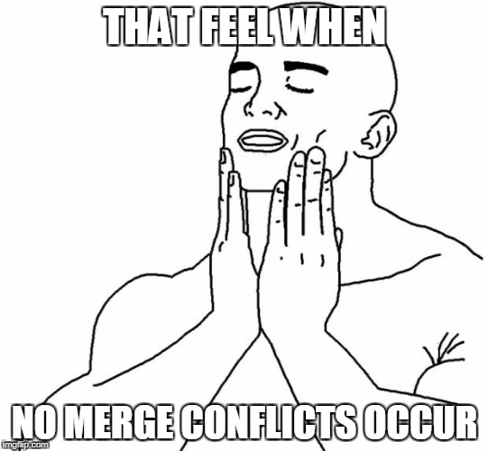

What is GitHub anyway? Use GitHub for Reproducible Research

11/11/2019
Introduction
About Me
- Vivek Katial (vkatial@student.unimelb.edu.au)
- PhD Candidate (Optimisation on Quantum Computers)
- Data Scientist (3 years)
- I love travelling and trying new types of food and meeting interesting people

Agenda
- Getting Started
- Basics
- Branches
- Best Practice
Branches
What is a branch?
- All git commits live within a branch
- There could be many branches which represent many features
- The main branch in a project is called the master branch
Why Branching?
- Try out an idea - experiment
- Isolate work units - (keeping unfinished work separate)
- Working on long running topics
- Allow you to share work in progress without altering live/production code
Why Branching?

Branch Workflow

Branching Commands
- To create a new branch we run the command:
git branch <BRANCH_NAME>- To switch to a different branch we run the command:
git checkout <BRANCH_NAME>- To create a new branch and switch to it we run the command:
git checkout -b <BRANCH_NAME>Branching Commands
- To list all branches:
git branch -a- To delete a branch
git branch -d <BRANCH_NAME>- Finally, remember that branches aren’t available to others unless you push to the remote:
git push origin <BRANCH_NAME>Branch Merging
- You have now made all your changes and you want to merge changes into master.
git checkout master
git merge master <BRANCH_NAME>Pull Requests
- Pull requests are a feature that makes it easier for developers to collaborate using Git
- Once a pull request is sent, stakeholders will review code before deciding to merge.
- GitHub allows permissions to manage who/who can’t merge code into master.
- When making pull requests make sure to write meaningful comments on what features you have worked on
Merge Conflicts

Merge Conflicts
- Happen when you merge branches that have competing commits
- Git needs your help to decide which changes to incorporate in the final merge
- Manually fix the changes by looking at your files as text.
Group Excercise - All of Github
- One person add other members in group as colloborators to their forked repository.
- Each person create a branch on their favourite place they have travelled too.
- Inside the HTML file write two sentences about why you love this place.
- Commit your changes on your respective branch.
- Merge changes into your master branch.
Extra for experts change the background colour and add images of each of your locations